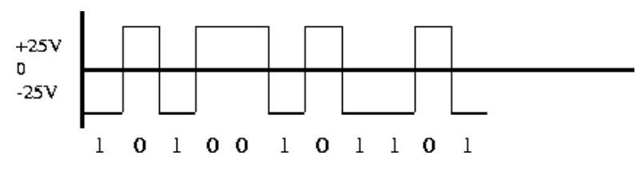
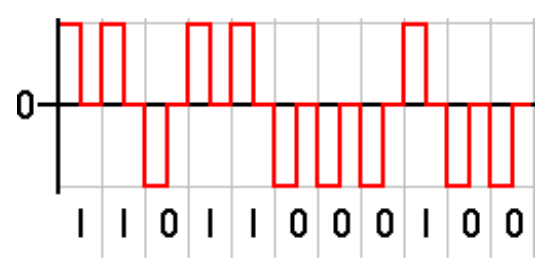
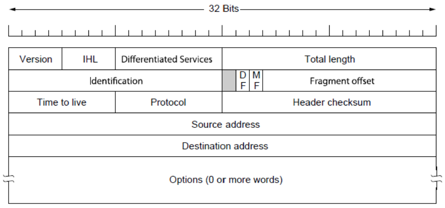

Ontario Tech University - Notes
See the side bar for the list of available pages.
Systems Programming
What is an Operating System
- Software that controls hardware to perform various operations.
- Can be a collection of software.
- Can be simple or complex.
Modern OS's contain several complex functions:
- Manage processes.
- Manage memory.
- Interact with hardware.
- Manage multiple concurrently running software.
OS "Modes"
OS software can run in different modes:
- User mode - Apps and the UI run in this mode. Applications must request the OS to perform hardware actions on their behalf.
- Kernel mode - The OS runs in this mode. Also called "Supervisor Mode". Code that runs in kernel mode has direct access to hardware allowing it to perform any operations on the hardware.
Some Functions of the OS
- Read/Write Disk/Memory.
- Pure computations.
- Network communication.
- Media playback.
- I/O peripheral communication.
- General OS security.
The OS Manages Resources
- Hardware.
- Software.
- The file system.
- In memory data.
Modern OS's are capable of managing multitasking and multiprocessing resources.
Common OS Hardware
CPU
The brain of the computer
Fetches instructions and data from memory to execute and operate on them. CPU family specific instructions exist.
Memory
General storage for the computer. Ranges from fast to quick:
- Hardware registers.
- CPU local cache.
- Main Memory (RAM).
- SSD's.
- HDD's.
- Optical disks.
- Magnetic tapes.
I/O Devices
- Monitors.
- Keyboards+
- Mice.
- USB flash drives.
- etc.
The Layers of an OS
- [App] User and other system programs.
- [OS] The UI.
- [OS] System calls - How apps interact with the hardware.
- [OS] OS services - Ongoing OS processes, such as, I/O operations.
- Hardware.
OS Architectures
OS's are, generally, very large programs. Here are a few ways they are structured:
The Simple Structure
- Not divided into modules
- Interfaces and levels of functionality are not well separated.
The Layered Structure
- Divided into a number of layers. Each is built ontop of the last.
- Hardware is layer 0.
- The user interface is the highest layer.
- Layers are defined such that each only uses the functions services of the next lower layer.
Microkernels
- Moves as many services from the kernel into user space.
- Communication between user modules typically uses message passing.
- Easy to extend.
- Easy to port.
- Often more reliable.
- Often more secure.
- There is performance overhead when the various user space modules communicate with their kernel space dependencies.
Modules
Many OS's implement loadable kernel modules.
- Typically uses an Object-Oriented approach.
- Core components are separate.
- Modules communicate over known interfaces.
- Loaded as needed.
- Similar to layers, but more flexible.
A Hybrid Approach
Most modern OS's use a hybrid approach to address various concerns, such as, security, preformance, usability, etc.
Linux Kernel Modules
Each kernel module usually has an initializing function specified with the
module_init() function (macro?). Similarly there is a deinitializing function
specified with the module_exit() function.
Here is a simple kernel module:
#include <linux/init.h>
#include <linux/module.h>
#include <linux/kernel.h>
MODULE_LICENSE("GPL"); // Needed.
static int __init init_kernel_mod(void) {
printk(KERN_ALERT "Initializing kernel mod!\n");
return 0;
}
static void __exit exit_kernel_mod(void) {
printk(KERN_ALERT "Releasing kernel mod resources!\n");
}
module_init(init_kernel_mod);
module_exit(exit_kernel_mod);
And the associated Makefile:
CONFIG_MODULE_SIG=n
obj-m += my_kernel_mod.o
default:
make -C /lib/modules/$(shell uname -r)/build M=$(PWD) modules
clean:
make -C /lib/modules/$(shell uname -r)/build M=$(PWD) clean
Review the Linux kernel module development documentation for details.
Relevant CLI Commands
lsmod- List currently loaded mods.modinfo <mod-name>- Prints info about a specific kernel module.rmmod <mod-name>- Removes a currently loaded module.insmod <mod-name>- Loads a new module (no dependencies on unloaded modules allowed).modprobe <mod-name>- Loads a new module and its dependencies.
Processes
- A program in execution.
- Contains program code. (Stored in the "text" section within a binary.)
- Data section containing global variables. (This is a feature of the binary format, no?)
- Has its own program counter and set of registers.
- Has its own stack.
- Has associated heap memory.
A program is a passive entity stored on disk. When it is loaded into memory and executed, it becomes an active entity called a Process. A program on disk can become multiple processes in memory.
| Process |
|---|
| Stack |
| ..... |
| Heap |
| Data |
| Text |
The Stack grows downwards and the Heap grows Upwards.
Process States
- new - The process is being created.
- running - Instructions are being executed.
- waiting - Execution is paused waiting for some event to occur.
- ready - The process is specifically waiting to be assigned CPU time.
- terminated - The process has finished execution.
--- title: Process States --- stateDiagram-v2 direction LR [*] --> New New --> Ready: admitted Ready --> Running: scheduler dispatch Running --> Ready: interrupt Running --> Waiting: I/O or event wait Waiting --> Ready: I/O or event completion Running --> Terminated: exit Terminated --> [*]
Process Scheduling
- It is considered bad to have process wait for a long time before they get assigned some CPU time.
- Effective process management translates to a "performant" computer.
- We want to maximize CPU usage, quickly swapping in processes as others finish or their allocated time slice expires.
Process Scheduler
- Selects which process executes next on the CPU.
- Maintains a queue of processes.
- Various queues:
- Job Queue - All processes.
- Ready Queue - All processes in Main Memory in the ready state.
- Device Queues - Processes waiting for an I/O device.
With a single CPU core, process must wait for their turn as only one process can run at a time. There are various Scheduling Argorithms to determine when and which process runs.
Two Different Schedulers
The Short-Term Scheduler (a.k.a. CPU Scheduler)
Selects which process should next be allocated some CPU time. This is sometimes the only scheduler in the system. Invoked frequently so it should be fast.
The Long-Term Scheduler (a.k.a. Job Scheduler)
Selects which processes should be brought into the ready queue. Invoked relatively infrequently, need not be fast.
Process Creation
Processes are identified by a process identifier (pid). The parent and child
can execute concurrently or the parent can wait for the child to terminate
before continuing to execute.
Parent and child processes have options when it comes to sharing resources:
- Parent and children can share all resources.
- Children share only a subset of resources.
- Parent and children share no resources.
In terms of the address space:
- The child can recieve a duplicate of the parent's.
- The child can have a fresh program loaded into it. (
exec())
--- title: Process Creation --- stateDiagram-v2 direction LR [*] --> fork() fork() --> exec(): child exec() --> exit() exit() --> wait fork() --> wait: parent wait --> [*]: resumes
Process Termination
- Process resources are deallocated by the OS.
- A parent may terminate a child process by using the
abort()syscall. - Some OS's may not allow children processes to exist if their parent terminates.
- A zombie process is a process who's parent is not waiting for its termination.
- An orphan process is a process who's parent has terminated.
Inter-Process Communication - IPC
Process may be independent or cooperative. If they are cooperative they need some form of communication. This is what IPC is about. We look at two types of IPC:
Shared Memory
- An area of memory shared among processes.
- Communication is under control of the user processes.
- Requires manual synchronization of communication.
| Shared Memory |
|---|
| Process A |
| shared memory |
| Process B |
| ..... |
| ..... |
Message Passing
A system for processes to communicate and synchronize their actions. There are two main operations in message passing: send and recieve. Message sizes can be fixed or variable. If two processes wish to communicate, they must establish a communication link between them. There are physical and logical concerns for communication link implementations, here are some:
- Physical - specifically, the medium over which message passing occurs.
- Shared Memory
- A Hardware Bus
- The Network
- Logical - We look at these in more detail.
- Direct or indirect.
- Synchronous or asynchronous.
- automatic or explicit buffering.
| Message Passing |
|---|
| Process A |
| Process B |
| ..... |
| ..... |
| Message Queuem1, m2, m3, ... |
Direct Communication
- Processes must name each other directly when sending and receiving.
- "Links" are established automatically.
- Links are between exactly one pair of processes and there is only one link between a pair.
- May be unidirectional but are usually bi-directional.
Indirect Communication
- Messages are sent to and received from mailboxes (or ports.)
- Each port has a unique id.
- Processes must share this port.
- A port or mailbox may be associated with multiple processes.
- unidirectional or bi-directional.
Synchronous or Asynchronous
- Message passing may be blocking or non-blocking.
Automatic or Explicit Buffering
Each link has a queue of messages with differing capacities and behaviours:
- Zero capacity - No buffering, the sender must wait for the receiver to receive.
- Bounded Capacity - Finite buffering, the sender must wait if the queue is full.
- Unbounded Capacity - Infinite buffering, the sender never waits.
Relevant Functions
fork()exec()wait()abort()
Threads
A thread is the basic unit of CPU utilization. Thread creation is lightweight compared to process creation. Threads have their Parents’ PCB, its own Thread Control Block, register set, Stack and common Address space
Threads contain:
- ID
- Program Counter
- Register Set
- Stack
Multicore Programming
Parallelism, concurrency. Tasks for developers include:
- Identifying parallelizable/concurrent tasks.
- Balancing parallelism/concurrency.
- Data splitting.
- Data dependencies.
- Testing, debugging.
Threads
User level thread libraries and kernel level threads exist.
We use pthread in this course.
pthreads can be implemented at the user level or kernel level. pthreads is primarily a standard. OS's may implement this standard.
#include <pthread.h>pthread_create()pthread_join()pthread_self()
Producer, Consumer Pattern
self explanatory.
Problems
Producer may produce more than the buffer can hold. (possible buffer overflow). Consumer may attempt to retrieve data after the buffer is emptied. This is known as the "Bounded Buffer Problem".
The solution: ensure both the consumer + producer know the capacity and current size of the buffer. The producer will wait to produce if needed, the consumer will wait to retrieve if the buffer is empty.
Race Conditions
Non-deterministic order of execution of concurrent/parallel code with shared mutable state.
Or
Race Conditions ocurr when two or more threads/processes can access shared data and attempt to access and change that data at the same time. The currently active thread/process can change at any time in between executions of individual instructions potentially causing the threads/processes to access the shared data in an arbitrary order. The typical solution is to place a lock around the shared data.
Critical Sections
Sections of code where shared mutable data is either read or written to.
Can be broken down into the following subsections:
- entry - The thread/process checks if it is okay to enter its critical section.
- critical - The dangerous area.
- exit
- remainder
The entry and critical sections are the most important.
Supporting Critical Sections
Mutual Exclusions
Only one process should execute code in their critical section at a time.
Mutexes
Mutexes facilitate this: first acquire() a lock, later release() the lock.
These two functions need to be atomic and may require hardware support. Trying
to acquire an already acquired lock will cause "busy" waiting. this kind of
behaviour is also called a spinlock.
Progress Guaranteed
If no process is in its critical section, and a process wants to enter its critical section, selection of the next process to enter its critical section cannot be postponed indefinitely.
Bounded Waiting
There is a bound on the number of process's that can cut in line when multiple are waiting to enter their critical sections.
Semaphores
Binary Semaphore - Same as Mutex. Counting Semaphore - internal counter can range over an unrestricted domain. Use atomic 'wait' and 'signal' functions.
CPU Scheduling
The CPU-I/O Burst Cycle
During a CPU burst, the CPU performs computations that don't rely on I/O. Each CPU burst can be of arbitrary length, but is usually followed by an I/O burst. I/O bursts are sections of time where the CPU waits for I/O (Though, the CPU could swap processes at this time to keep itself busy.) Our concern is to distribute CPU bursts efficiently.
CPU Scheduler
Selects processes among those in the ready queue, and allocates them CPU time. Scheduling decisions may take place when a process:
- Switches from running to waiting state
- Switches from running to ready state
- Switches from waiting to ready
- Terminates
Criteria & Good Things
CPU utilization – We want to max this. Keep the CPU as busy as possible.
Throughput – We want to max this. # of processes that complete their
execution per time unit.
Turnaround time – We want to min this. Amount of time to execute a
particular process.
Waiting time – We want to min this. Amount of time a process has been
waiting in the ready queue.
Response time – We want to min this. Amount of time it takes from when a
request was submitted until the first response is produced, not output (for
time-sharing environment). wait time + response time.
CPU Scheduling Algos
- First Come First Serve - Non-preemptive, processes are run until finished.
- Shortest Job First - Needs to know CPU burst time of process.
- Priority Scheduling - Smallest integer means highest priority. Possible "starvation": Low priority tasks may never execute. the solution? Aging: priority increases w/ time.
- Round Robin - Round robin. 1/n of CPU time for n processes in chuncks of q (usually 10-100ms.) Preemptive.
- Multi-Level Queue Scheduling - Ready queue is partitioned into separate
queues, e.g.:
- foreground
- background
Processes are permanently in a given queue. Each queue has its own scheduling algorithm: - Foreground – Round Robin
- Background – FCFS (FIFO)
Plus scheduling between queues (e.g. fixed priority (foreground first, then background), timeslice (70% fg, 30 bg))
common priority levels for multi-level queue scheduling
- system
- interactive
- interactive editing
- batch
- student
Real Time CPU Scheduling
- Soft Real-Time - No guarantee when critical real-time processes will be scheduled and finished.
- Hard Real-Time - Task must be serviced by deadline.
The following types of latencies can affect performance of real-time systems:
- Interrupt latency – Time from arrival of interrupt to start of routine that services the interrupt.
- Dispatch latency – Time for the scheduler to take the current process off the CPU and switch to another.
Earliest Deadline First Scheduling
A real-time scheduling algorithm. Priorities are assigned according to deadlines: The earlier the deadline, the higher the priority; the later the deadline, the lower the priority.
Deadlocks
Cyclic waiting on resources used by processes.
Four conditions are required for Deadlocks to occur:
- Mutual Exclusion of resources.
- Hold and Wait - A process w/ a resource waits for another resource held by some other process.
- No Preemption - Resources can only be released voluntarily after a process has completed its task.
- Circular Wait - see first sentence of this section.
--- title: Deadlocks --- flowchart TB A((P_A)) --> R1 R1 --> B((P_B)) B --> R2 R2 --> A
Handling Deadlocks
We look at three different ways to handle deadlocks:
- Ensure the system never enters a deadlock state.
- Through deadlock prevention.
- Through deadlock avoidance.
- Allow the system to enter a deadlock state, then recover.
- Ignore the problem; protend it doesn't exist.
Deadlock Prevention
To manage:
- Mutal Exclusion - It is only necessary for non-safely sharable resources.
- Hold and Wait - Guarantee that whenever a process requests a resource, it does not hold any other resource (or have all resources allocated to it prior to execution.) This has the potential to cause low resource utilization.
- No Preemption - If a process requests a resource while it holds another, release all resources that process holds.
- Circular Wait - Impose total ordering, blah, blah, yada, yada.
Deadlock Avoidance
Smart(er) allocation of resources to processes to avoid deadlocks.
- Processes are in a safe state if it is possible for them to complete using the available resources.
- Processes are in an unsafe state if it is not possible for them to complete using the available resources.
Consider the following process/resource matrix:
| Process | X Resource Held | X Resource Required | Y Resource Held | Y Resource Required |
|---|---|---|---|---|
| A | 1 | 8 | 2 | 9 |
| B | 2 | 6 | 3 | 9 |
| C | 2 | 6 | 2 | 3 |
Available X Resources: 4
Available Y Resources: 4
Is the system above, as a whole, in a safe state? Answer: Yes, the "safe state sequence" is C -> B -> A.
Deadlock Recovery
Deadlocks are allowed to happen. Apropriate actions are taken to recover from the deadlock state. Given a graph of processes and the resources they hold/request, if the graph contains a cycle, we have a deadlock. We talk about three ways of recovering from deadlocks:
- Preemption - Preemptive resources (resources that can be taken away) are given to a process that requests them from a process that currently holds them.
- Rollback - Each process is check-pointed. The state of both processes and resources are saved. When a deadlock ocurrs, recover to a previous checkpoint.
- Killing (Processes) - Processes holding contested resources will be killed so other processes can use those resources.
Deadlock Ignorance
Simply ignore the possibility of deadlocks. In systems where deadlocks are rare, this is a valid strategy.
Networking - Models
The OSI Reference Model (for fun!):
--- title: OSI --- flowchart TB A[Application Layer] --> B B[Presentation Layer] --> C C[Session Layer] --> D D[Transport Layer] --> E E[Network Layer] --> F F[Data Link Layer] --> G[Physical Layer]
Signals
Different modulation schemes are used to encode data over signals. Signals can be multiplexed to share it among multiple users. There are two types of signals used in networks:
- Digital
- Analog
Digital Signals
- Discrete values
- Consist of "On/Off" or 1/0.
We look at two different encoding techniques:
- Current State Encoding.
- State-Transition Encoding.
Current State Encoding
Data is encoded by the presence or absence of a signal. 3 types:
- Unipolar.
- Polar.
- Return to zero.
Unipolar
One polarity (positive or negative) is used. The middle zero state represents a binary 0 while the positive/negative polarity represents a binary 1 (or vice-versa).

Polar
Similar to unipolar except both poles are used. Either positive or negative can represent binary 1 (or 0.)

Return to Zero
After the transmition of each bit, the voltage returns to 0. The zero state is considered a rest state.

State-Transition Encoding
Data is encoded by the transition of a high voltage to a low voltage (or vice-versa.) The transition is observed mid bit.
Manchester
Transition form high to low is 1, low to high 0 (or vice-versa.)

Analog Signals
Electro-magnetic waves! Sine waves! There are two types of modulation techniques we look at:
- Amplitude Modulation - The amplitude of the wave encodes the bit value. For example: Higher amplitudes encode a 1, while lower amplitudes encode a 0.
- Frequency Modulation - The frequency of the wave encodes the bit value. For example: Higher frequencies encode a 1, while lower frequencies encode a 0.
The Data Link Layer
This is where bits are framed into packets and hardware level addressing (e.g. MAC addresses) ocurrs. And, importantly, Error detection and correction.
Parity Checks
- Considered the simplest form of error detection.
- Two types:
- Even parity.
- Odd parity.
Even Parity
The number of on bits in a chunk of data is checked. If odd, the additional parity bit at the end of the data is set to 1. If even, the additional parity bit is set to 0.
Odd Parity
The opposite of even parity. We check the number of on bits and set the parity bit so that the number of 1s is odd.
Checksums
Changing an even amount of bits in the data can fool our parity checks. The simple checksum is an improvement over flimsy parity checks:
- Consider all the "words" in the chunk of data to checksum.
- Sum them all up.
- Take the 1's complement (binary NOT).
- Send the original data along with the 1's complement of the sum.
- On the receiver side, take the sum of the words in the received data. Add the checksum (the 1's complement sent by the sender) and check that the result contains all bits set to 1.
The TCP Model Exists!
IP Addresses
IP Addresses are allocated in blocks called "prefixes". The prefix refers to
the network portion of an IP address. It is followed by the host portion.
You'll occasionally see IPv4 address written in the 192.168.0.1/24 notation.
The /24 part specifies how large the network portion is in terms of bits. The
corresponding subnet mask has the same number of 1 bits.
Classful Addressing
Older addresses came in blocks of fixed size:
- Class A - For regular use.
- Class B - For regular use.
- Class C - For regular use.
- Class D - For multicast.
- Class E - Reserved.
The class of an IP Address can be determined from the number of consecutive 1 bits at the beginning of the address:
- 0 consecutive 1s: class A.
- 1 consecutive 1s: class B.
- 2 consecutive 1s: class C.
- 3 consecutive 1s: class D.
- 4 consecutive 1s: class E.
IPv4 Header

IHL - Internet Header Length. The size of the internet header in 32-bit words.
Differentiated Services - Specifies the differentiated service this packet is for. Includes Explicit Congestion Notification.
Total Length - Size of the entire packet.
Identification - Used for uniquely identifying the group of fragments for a single IP datagram.
DF - Don't Fragment. Do not fragment the packet. The packet is dropped if fragmentation is required to route the packet.
MF - More Fragments. For fragmented packets, all fragment except the last have this flag set.
Fragment Offset - Offset of a fragment relative to the beginning of the original IP datagram. Specified in units of 8 bytes.
Time To Live - In practice, hop-count.
Protocol - Protocol used in the data portion of the IP datagram.
Header Checksum - Checksum for the header only.
Options - Optional parameters.
IPv6 Header

Traffic Class - Contains both the Differentiated Service field and the Explicit Congestion Notification field.
Flow Label - An identifier for a group of packets.
Payload Length - Size of the payload in octets. Includes extension headers.
Next Header - Type of the next header. Usually the transport layer protocol used by the packet's payload.
Hop Limit - A.K.A. Time to Live.
Security
Encryption
- A method of encoding data so that only authorized parties can access it.
- Does not prevent interception or interference.
- Encryption algorithms are called ciphers.
- Unencrypted data is called plaintext.
- Encrypted data is called ciphertext.
- A cipher takes plaintext and produces ciphertext.
- The act of encoding plaintext with a cipher is called encryption.
- Decoding ciphertext into plaintext is called decryption.
- Used to send sensitive data over an insecure channel.
Key Based Encryption
Keys are relatively short, pseudo-random data sequences. They are used to both encrypt and decrypt data. There are two broad types of key based encryption algorithms: Symmetric and Asymmetric.
Symmetric Ciphers
A secret key is used by ciphers to produce the encrypted data, which can then be sent over an insecure channel. The receiver uses the same secret key to decrypt the ciphertext. But, how do we securely share the key between two or more people? If a third party intercepts the key exchange, they can easily pose as the sender since they now have the secret key.
Asymmetric Ciphers
A.K.A. Public-Key Encryption, tries to solve the key exchange issue by creating two mathematically related keys. One is the public key, which can be openly distributed and is used to encrypt messages to the receiver. The other is the private key, which only the receiver knows. It is used to decrypt the encrypted message. This allows anyone with the public key to send encrypted messages to the receiver, but only the receiver can decrypt the message. The private and public key pair are generated at the same time, but it is not possible to derive one from the other.
TLS
sequenceDiagram participant C as Client participant S as Server C->>S: 1. Client Hello S->>C: 2. Server Hello S->>C: 3. Client Certificate Request C->>S: 4. Client Certificate C->>S: 5. Client Sends Key Info (Encrypted with server's public key) C->>S: 6. Certificate Verify C->>S: 7. Finished Message S->>C: 8. Finished Message
Once a TLS connection is established, the TLS handshake occurs. The client sends to the server, among other things, the versions of SSL/TLS it supports, which ciphers it knows, and which compression methods it can use. The server selects the highest mutually supported SSL/TLS version and a cipher suite and compression method from the list provided by the client.
Certificates
- Each HTTPS server uses one or more certificates to verify their identity.
- The certificate must be trusted by the client or a third party the client trusts.
- "This trust is proven using digital signatures."
OS Security and Protection
Don't Forget Protection
- A mechanism for controlling the access of programs/processes or users to the resources provided by a computer system.
- A protection-oriented system provides means to distinguish between authorized and unauthorized usage.
Principals of Protection
- The time-tested Principle of Least Privilage.
- Programs, users, and system processes should be given just enough privileges to perform their tasks.
Domain of Protection
- A computer system is a collection of processes and objects/resources.
- Each object has a unique name and can only be accessed through well-defined
and meaningful operations.
- e.g. A CPU can execute, Memory can be read/written.
- A process should only be able to access the resources it currently requires to complete its task. This is known as the Need-to-Know Principle.
Linux Permissions
- Determines whether a user or group has access to files, programs, or other resources on the system.
- Four access types/rules:
| Symbol | Meaning |
|---|---|
| r | Read permissions |
| w | Write permissions |
| x | Execute permissions |
| - | No permissions |
These permissions are specified for three times for each file: For the owner of
the file, the user group associated with the file, and everyone else. You can
see the permissions on a file by running ls -l in a terminal. One trio of
permissions (rwx) is read right-to-left. You'll often see them specified in
octal notation (e.g. chmod 766 ...), in which case, convert each digit into
binary and interpret it as a bitflag, on binary digit for each r, w, or x.
Security Violations
- Breach of Confidentiality - Unauthorized reading of data.
- Breach of Integrity - Unauthorized modification of data.
- Breach of Availability - Unauthorized destruction of data.
- Theft of Services - Unauthorized use of resources.
- Denial of Service (DOS) - Not MS-DOS, Prevention of legitimate use.
Security Violation Methods
- Masquerading (breach authentication) - Pretending to be an authorized user to escelate privileges.
- Replay Attack - Valid data transmission is maliciously or fraudulently repeated. See Wikipedia's exellent example.
- Man-in-The-Middle Attack - An intruder sits in the middle of data flow, masquerading as the sender and receiver to both sides of the connection.
- Session Hijacking - Intercept an already established session to bypass authentication.
Security Measure Levels
Security must occur at four levels to be effective:
- Physical - e.g. At data centers, servers, terminals.
- Human - Consider social engineering.
- OS - Protection mechanisms.
- Network - (D)DOS, intercepted communications.
Program Level Threats
Trojan Horse
Code segment that misuses its environment. Exploits mechanisms for allowing programs written by users to be executed by other users. (spyware, covert channels.)
Stack & Buffer Overflow
- Allows writing past argument on the stack into the return address.
- When a routine returns from a call, it'll return to the inject address instead of the intended original call location.
- Can cause unauthorized user or privilege escelation.
Viruses
- Code fragment embedded in legitimate program.
- Often self replicating, designed to infect other systems.
System & Network Threats
Port Scanning
- Automated attempt to connect to a range of ports.
- Detects available protocols.
- Detects OS (and its version).
Denial of Service
- Overload the targeted computer.
- Prevents it from doing any useful work.
- Often used as part of extortion or punishment.
FireWalls
- Hardware or Software that inspects packets going into or out of a network or computer.
- Packets are discarded or forwarded base on a set of predefined rules.
- Conceptually, just a router with specialized software for creating rules to permit or deny packets.
- Routers are more open by default, whereas FireWalls are intended to be more restrictive.
- Network Admins create access control lists to deny certain types of packets.
Good to Know Functions
Memory
| Function | Header | Notes |
|---|---|---|
| malloc | stdlib.h | |
| free | stdlib.h | |
| memcmp | string.h | |
| memset | string.h |
Strings
| Function | Header | Notes |
|---|---|---|
| strcat | string.h | Concatenate two strings |
| strcmp | string.h | Compare two strings |
| strcpy | string.h | Copy a string |
| strdup | string.h | Duplicate a string |
| strlen | string.h | Calculate the length of a string |
| strstr | string.h | Locate a substring |
| strtok | string.h | Extract tokens from strings |
| strto{d,f} | stdlib.h | Convert a string to a double/float |
| ato{i,l} | stdlib.h | Convert a string to an integer/long |
| toupper | ctype.h | Operates on a single character, convert input to unsigned char before use |
| tolower | ctype.h | Operates on a single character, convert input to unsigned char before use |
File I/O
| Function | Header | Notes |
|---|---|---|
| fopen | stdio.h | |
| fclose | stdio.h | |
| fread | stdio.h | Read n bytes |
| fwrite | stdio.h | Write n bytes |
| fscanf | stdio.h | Formatted read |
| fprintf | stdio.h | Formatted write |
| fgets | stdio.h | Read line-by-line |
| fseek | stdio.h | Set file position |
| getcwd | unistd.h | Current working directory |
| stat | sys/stat.h | File attributes |
| getpwuid | sys/types.h, pwd.h | Get password file entry (let's you get username of the owner of a file) |
| getgrgid | sys/types.h, grp.h | Get group file entry |
| chmod | sys/stat.h | Change file permissions |
| opendir | dirent.h | Open a directory for listing contents |
| readdir | dirent.h | Get next directory entry |
| closedir | dirent.h | Close directory |
Plus some others...
Processes/Threads
| Function | Header | Notes |
|---|---|---|
| fork | sys/types.h, unistd.h | |
| exec* | unistd.h | Family of functions (see execvp) |
| waitpid | sys/types.h, sys/wait.h | wait for process to change state |
| pthread_create | pthread.h | |
| pthread_exit | pthread.h | It is not generally required to explicitly call this function |
| pthread_join | pthread.h | |
| pthread_self | pthread.h | |
| pthread_mutex_init | pthread.h | |
| pthread_mutex_destroy | pthread.h | |
| pthread_mutex_lock | pthread.h | |
| pthread_mutex_unlock | pthread.h |
Networking
Required functions to start a TCP server:
#include <sys/socket.h> // included by arpa/inet, socket, bind, etc.
#include <netinet/in.h> // included by arpa/inet, struct sockaddr_in
#include <arpa/inet.h> // inet_pton, htons
#include <unistd.h> // close
void server() {
// First, setup the address.
struct sockaddr_in saddr;
saddr.sin_family = AF_INET;
saddr.sin_port = htons(8080);
inet_pton(AF_INET, "127.0.0.1", &saddr.sin_addr);
// Socket setup
int s_fd = socket(AF_INET, SOCK_STREAM, 0);
bind(s_fd, (struct sockaddr*)&saddr, sizeof(saddr));
listen(s_fd, 1);
// Client connections
int c_fd;
struct sockaddr_in caddr;
unsigned int caddr_len = sizeof(caddr);
c_fd = accept(s_fd, (struct sockaddr*)&caddr, &caddr_len);
recv(c_fd, <buf>, <size>, 0);
send(c_fd, <buf>, <size>, 0);
close(c_fd);
close(s_fd);
}
void client() {
// Address
struct sockaddr_in saddr;
saddr.sin_family = AF_INET;
saddr.sin_port = htons(8080);
inet_pton(AF_INET, "127.0.0.1", &saddr.sin_addr);
// Socket setup
int s_fd = socket(AF_INET, SOCK_STREAM, 0);
connect(s_fd, (struct sockaddr*)&saddr, sizeof(saddr));
// Communication
recv(s_fd, <buf>, <size>, 0);
send(s_fd, <buf>, <size>, 0);
close(s_fd);
}
For UDP communication:
void server() {
// First, setup the address.
struct sockaddr_in saddr;
saddr.sin_family = AF_INET;
saddr.sin_port = htons(8080);
inet_pton(AF_INET, "127.0.0.1", &saddr.sin_addr);
// Socket setup
int s_fd = socket(AF_INET, SOCK_DGRAM, 0);
bind(s_fd, (struct sockaddr*)&saddr, sizeof(saddr));
// Client connections
struct sockaddr_in caddr;
unsigned int caddr_len = sizeof(caddr);
recvfrom(s_fd, <buf>, <size>, 0, (struct sockaddr*)&caddr, &caddr_len);
sendto(c_fd, <buf>, <size>, 0, (struct sockaddr*)&caddr, sizeof(caddr));
close(c_fd);
close(s_fd);
}
void client() {
// Address
struct sockaddr_in saddr;
saddr.sin_family = AF_INET;
saddr.sin_port = htons(8080);
inet_pton(AF_INET, "127.0.0.1", &saddr.sin_addr);
unsigned int saddr_len = sizeof(saddr);
// Socket setup
int s_fd = socket(AF_INET, SOCK_STREAM, 0);
// Communication
recv(s_fd, <buf>, <size>, 0, (struct sockaddr*)&saddr, &saddr_len);
send(s_fd, <buf>, <size>, 0, (struct sockaddr*)&saddr, sizeof(saddr));
close(s_fd);
}
Computer Graphics & Visualization
Introduction
What is Computer Graphics?
- Visual communication
- Storage, manipulation, production, and display of geometrical information.
The Graphics Pipeline
LCD Displays
"Liquid Crystal Displays" - large molecules that change their optical properties when an electrical field is applied to them.
-
Many different types of LCDs.
-
LCDs are made up of many small cells containing these liquid crystals.
-
LCDs are a rectangular array of these cells with small wires running through the cells to apply the electrical field.
-
The size of the array (width and height) is called the resolution of the display.
-
Each cell is a pixel.
-
Each cell is capable of displaying one colour.
-
We display an image by specifying the colour of each pixel on the screen.
-
Approx 1-2 Million pixels, so this is a lot of information to specify.
-
Fixed resolution, CRT's could handle a range of resolutions.
Rasters
- The graphics card has a 2D array of memory with one entry for each pixel.
- The entry is typically the colour of the pixel.
- This array is called a framebuffer.
Representing Colour
- Human response to light intensity is logarithmic not linear.
- This impacts display design.
- Several different wavelength of light can produce the same colour.
- We approximate colour based on the RGB colour space.
- The total colour space is called a gamut (range of colours that can be represented.)
- RGB is a close match to the colours produced by monitors, so it is used in computer graphics.
- Note: We cannot use a primary based system to get all colours, unless we allow negative colours.
Sending the Pixels
- Need an organized way of getting the pixels onto the screen (The info carried by VGA/HDMI/etc. protocols).
- Use a Scanning Pattern. The pixels are sent one at a time in some order.
- Typically: start with the pixel in the top left corner and go pixel by pixel, row by row.
- Once the bottom row is reached, start over.
- At the end of each line and screen, there is a small amount of time that is used by CRTs to return their beam to the start of the line or the top of the screen (this is called horizontal and vertical retrace.)
- We also need a synchronization signal to tell the monitor when we are at the top of the screen and when we are about to start each line.
Refresh Rate
The graphics card handles this, we don't need to worry about it in terms of hardware.
Rendering
- The process of converting geometrical information into pixels in the framebuffer.
- Can be real-time or non real-time.
- Techniques such as Global Illumination are for non real-time rendering.
- OpenGL focuses on real-time rendering.
The Graphics Pipeline
Models
- Representation of an object.
- Usually mathematical in nature.
- Made up of triangles.
- Each triangle has 3 associated vertices.
- Models may have millions of triangles.
We currently have 2 parts of the Graphics Pipeline:
- The model - triangles
- The display - pixels
The graphics pipeline tries to efficiently convert triangles to pixels.
- Need to project 3D triangles to a 2D image.
- Use a view transformation (perspective):
- type: perspective.
- eye location needed.
- viewing direction needed.
- up direction needed.
- Perspective projection defiens a viewing frustum.
- The viewing frustum essentially clips all the triangles.
- If triangles are not clipped they will appear in incorret positions.
- The process of eliminating the triangles is called clipping.
Local and Global Axes
Local - Local to the model.
Global - "Local" to the "world".
Adding Colour to Triangles
We do this by defining a lighting model and material properties for our models.
- Lights have a position.
- Lights have a direction.
- Lights can have a colour.
- We need to assign material properties to the light: How much of the light gets reflected and how.
- Normal vectors determine how light is reflected off of a triangle surface.
- Vertecies get a normal vector that is the average of the normal vectors of the triangles it is connected to.
Shading
Gouraud Shading use the material properties, vertex position, and vertex normal to calculate the colour of the vertex and interpolate it accross the triangels of the model.
Phong Shading instead interpolates the normal vector across the surface and computes the colour at each pixel.
The current stages of the graphics pipeline. For each triangle:
Transform the vertices into global "world" coordinates. Project the vertices. Clip the triangles to the viewing frustum.
Pixel Filling
Filling is determining the pixels inside of a triangle's outline.
- There are efficient algorithms for this implemented in GPU hardware.
- As we fill each pixel we compute its colour as mentioned above (Phong style.)
- Issue: What about triangles behind or infront of other triangles?
- We don't want to draw triangles behind others. This is called the Hidden Surface Problem.
- Current graphics cards solve it in hardware. We use a depth buffer.
- The depth buffer holds the "depth" of the corresponding pixel.
- If a pixel is potentially closer to the viewer (because a triangle is in front of another one), draw that pixel and update the depth buffer.
- The x, y, z coords of an entire triangle (including pixels on its surface) are interpolated from the vertices.
- For our course pixels are also called fragments.
Overall Pipeline Steps
Geometrical Proccessing: Transform the vertices into global "world" coordinates. Project the vertices. Clip the triangles to the viewing frustum. Fragment Processing: Compute the pixels covered by the triangle. Compute the colour of the pixel. Interpolate the depth value. Deal with hidden surfaces using the Z buffer.
Introduction To Modeling
Vectors:
- It makes sense to transform points (positions)
- It does not make sense to transform directions.
OpenGL user right handed coord system: Y is up, X is to the right, z is out of the screen.
Winding order: CCW determines which side is the inside, and which is outside.
Polygons must be planar for efficiency and simplicity. Given the equation for a plane:
The vector (a, b, c) is normal to the plane.
Meshes store each vertex once and reference it per face. Advantages:
- Save memory, each vertex is stored once.
- Each vertex is processed once -> faster
- Helps reduce gaps in model
- easily maps to OpenGL Data is typically stored in 2 tables:
Vertex table
- location (pos)
- normal
- colour
- etc.
Like an array buffer.
Face Table
- list of vertex indicies per face.
Like an element buffer.
Mesh Normals
- Each vertex should have its own normal for smooth render.
- Two steps: calc normal for each polygon face, then average all normals of a face a vertex is connected to.
Normal per Face
- cross product of vectors that lie on plane of face.
- vectors can be made from the vertices of each face.
- Must construct them (use the verticies) in CCW order or the normals will have the wrong orientation.
- Could cause problems if the vectors end up being near co-linear. Incredibly unlikely with triangles.
- Polygons are easy to see with this method.
Normals per Vertex
- As mentioned above Efficient method: table w/ 4 cols normal x, normal y, normal z, count of polygons vertex is in. loop through polygons and calc normal add normal components to corresponding entry in table (i.e. for each vertex) increment polygon count divide all components by count normalize. done!
Transformations
In Euler angles rotations are about a single axis at a time. different versions of Euler angles depends on the order of the axis (rotations?) none of those orders work in general. Euler proved you can't specify arbitrary rotation in 3D with just 3 numbers.
Euler angles don't work sometimes: 90deg rotation about X-axis will rotate Y-axis to the Z-axis. Can't use the original Y-axis anymore. This is called a Gimbal lock.
A rotation matrix rotates its own rows onto the X, y, z axis.
The inverse of a rotation matrix is its Transpose.
R^t will rotate the different axis onto its rows.
An easy way to construct a rotation matrix to rotate 3 orthogonal vectors (u, v, w):
- Rotate onto x, y, z axis with R
- For example, the rotate about some u vector: Use basic x-axis rotation matrix to rotate about u
- Rotate axes back onto (u, v, w) vectors with R^t
- NOTE: (u, v , w) must be unit vectors! normalize first! Construct R as:
- first row is u vector
- second row is v vector
- third row is w vector
- its 4x4 matrix.
Rotate about arbitrary axis
-
rotate axis a onto the z-axis.
-
perform rotation about z-axis.
-
rotate back to original fram of reference with transpose of original rotation.
-
a should be normalized.
-
a is the third row of the rotation matrix
-
But what about the other two rows, they need orthogonal vectors. for an orthogonal vector u:
- make a vector t that is equal to a
- change the smallest component to 1
- take the cross-product of t and a
- normalize it.
- To get the final vector v, take the cross-product of u and a.
- The Rotation matrix has u as the first row, v as the second row, a as the third row. It's also a 4x4 matrix.
It is possible that transforming a surface and then its normal will result in a normal that is not perpendicular to the transformed surface! Affine transforms including scale do not preserve angles between lines.
Transforming the Normal
the relationship between the normal and a vector tangent to the surface (call it t):
(matrix-vector multiplication)
For transoformation M: <-- What is n'?
See the math in the slides
The matrix to transform the normal is the transpose of the inverse of the original transformation matrix:
Note: n' may no longer be unit length so normalize to be safe.
Note: If M contains only translations and rotations then we can just use M instead of the above math. (Rotations and translations are considered rigid body transformations which preserve the normal vector.) (The inverse of a rotation matrix is just its transpose so we are essentially transposing the M twice in this case.)
Careful with reflections in 3D! they can change the handed-ness of the coord system. An odd number of 1's => change in handedness.
Decomposing Transformations
All transforms can be broken down into a translation, 2 rotations, and a scale.
- The translation is on always placed on the left side in a multiply:
translation-matrix * partially-broken-down-matrix = original-transform-matrix - If the partially-broken-down-matrix that remains is symmetric:
eigen value decomposition can be done to get a RSR^t (rotation-scale-rotationTranspose)
matrix.
- S is a diagonal matrix with the entries being the eigen values of the partially-broken-down-matrix.
- R gets its columns from the eigen vectors.
- If not symmetric: Use SVD (single value decomposition.) Not taught it seems.
Implicit and Parametric Equations
Implicit Representations
- points that satisfy the above are on the curve.
Implicit Line
- direction of line:
- every point on the line must be parallel to
- every point has perpendicular vector:
- See that
So what is ?
- given and
- Where is any point on the line.
Implicit Circle
or
3D
Implicit reprsentations for spheres:
Display
To display these we need to know their normal vectors. For implicit surfaces it is the gradient:
Follow the gradient to the intersection point of the surface. Once a point is found, use the gradients and tangents to find more points on the surface. Not the easiest.
Parametric Representations
Easier to draw than Implicit representations.
- Have a parameter () that varies along the curve.
- Use a function of that parameter to generate points along the curve.
Example of a Circle parametric equation:
for
Parameterization is NOT unique
Arc length parameterization
- not common
- For some constant c.
- is distance along the curve.
Unit Parameterization
Use
For circle:
3D
We use two parameters to trace out the surface.
A 3D object's surface has dimensions (i.e. 2D) Therefore, we need only parameters to draw its surface.
Piecewise Curves
- For simple shapes, the above parametric is fine.
- For complex shapes it's not.
- Use a piecewise representation for more complex curves.
- disadvantage: Needs more functions.
- advantage: simpler functions.
- advantage: easier to work with/program.
- advantage: You can get any curve w/ enough pieces.
Piecewise Curve Continuity
"How the pieces fit together." Parametric Continuity:
- continuous: Its nth derivative is continuous.
- Affects: shape and speed.
- for curves and particularly where the connect.
continuous: a corner The curve segments match up, there are no gaps but it might not be smooth.
: first derivative is equal at the join points. : nth derivative is equal at join points.
Parametric Representations Continuity
Derivatives may have the same direction, but different magnitude due to the parameterization.
This is Geometric Continuity: The curve segments match up and their tangents (nth derivatives) have the same direction but different magnitudes.
Two curves are G^1 continuous if: , where is a scalar constant.
Advanced Curves
Bezier Curves
Made up of 3 control points in 2D
-
Good local control properties
-
Changes affect at most two segments
-
Bounded by convex hull: smallest polygon that contains all control points.
-
variation diminishing property: A line intersects the curve no more (ie. this many or less) times than it intersects the lines connecting the control points.
-
affine invariant: Can translate, rotate, scale, and skew the control points and the curve will be transformed in the same way.
-
ergo, transform the control points to transform the curve.
-
Bezier curves are symmetric, reverse the control points and you get the same curve.
-
Usually a shared control point scheme is used where the last control point of one piece is the first control point of the next.
- Guarantees continuity, the derivatives are controlled by other control points.
- To get : The 3 control points at a join must be collinear.
- To get : The 3 control points must be, additionally, of equal distance from the center control point.
-
Main disadvantage: Only guarantee continuity.
- With additional constraints above: can be reached.
Cubic Bezier Curves
4 Control points.
- Interpolates the first and fourth.
- approximating the second and third.
- derivative at start (u = 0): value is 3 times the vector from the first to the second control point.
- derivative at the end (u = 1): value is 3 times the vector from the third to fourth control point.
- position of curve is controlled by first and fourth control point.
- shape of curve is controlled by the second and third.
See math slide 18
Cubic Bezier Constraint matrix (C):
Blending Matrix (B):
Inverse of the Constraint matrix.
Bernstien Polynomials
Multiply out uBp -> get bernstien polynomials.
- They are all cubic.
- Labelled with subscripts:
Evaluating a Point on a Cubic Bezier Curve
- See slides(22) for definitions of functions to
Bezier Surfaces/Patches
- application of bezier curves to two parametric directions.
- Control points.
How to render (freeform surfaces)
freeform surface spec (presumably bezier surfaces above.):
- points on surface by evaluating the sums above.
- order of points, through param order.
- Can extract polygon mesh
- choose param stepping size for u & v
- compute points for each step
- create polygon mesh using inherent order
- Can be as detailed as needed.
Viewing and Perspective
Photorealistic rendering
- Goal for over 40 years
- produce image as close to a camera as possible
Non-Photorealistic rendering
- illustrations
- visualizations
- art
- image has purpose
- illustrate concept or process
- draw attention to particular parts of image.
Rendering Process
- Viewing and Projection
- Hidden Surface Removal
- Determining Surface colour
Hidden Surface Removal
Three standard steps in rendering:
- Viewing and Projection
- Hidden Surface Removal <<<<- This one
- Determining Surface Colour
Motivation
- Show front parts only
- Avoid unnecessary processing
Backface culling
Remove polygons where dot product of surface normal and view direction > (or <) 0.
-
for closed objects
-
remove faces early in pipeline
-
reduce polygon count by ~half
-
Sign depends on how view direction vector is defined:
- v is view direction (from camera to polygon): > 0 (pos)
- v is polygon to camera: < 0 (neg)
-
usually not sufficient due to partial overlaps
-
reliable only if no overlaps occur
-
order of objects depends on rendering sequence still.
-
Can reduce rendering time by up to half.
Hidden surface elimination
- Mostly done in hardware
- 3 main algos
- Painter's
- Z buffer
- BSP Tree
Painter's Algorithm
- sort scene's triangles from back to front
- Draw back to front
- Problems
- cyclic overlaps
- sort is O(n * log(n))
- wasted time drawing invisible (covered) items.
Z Buffer Algorithms
- depth buffer
- used in hardware
- Post viewing transforms
- z-depth is distance from viewer to point.
- projection of 3D to 2D polygon
- Efficient algos for computing pixels covered by a polygon exist
- can interpolate z-values from projected verticies. See math slide 20
projection is non-linear (looks logarithmic.)
- Process:
- z-buffer size of screen
- all positions initialized to furthest point (far-plane f)
- check current pos' z-buffer val
- If current pos' z-val is smaller, draw and update z-buffer
- Efficient?
- May draw a pixel multiple times
- No sorting
- simplicity and hardware implementation make up for inefficiency
- Points
- memory required for z-buffer
- No cyclic overlaps
- Must scale z-values to fit within 32/64 bit ints/floats
- For Ortho projection @ 32 bits:
- B possible values = 2^32
- ie. B bins with size (f - n)/B each (this is delta-z, surfaces delta-z or less close together give same z-buffer value)
- Want polygons to be more than delta-z apart after transformations.
- Otherwise: z-fighting.
- Perspective:
- See math in slide 34
- closer to the eye = more precision
- further from the eye = z-buffer value loses precision.
- delta-z-world is bin size in world coordinates = (z-world^2 * delta-z) / (f * n)
- In model or world space, bins aren't uniform size
- Never set n = 0, bins become extremely large far away from the eye.
- High precision near the near-plane can be wasted if not used.
- For Ortho projection @ 32 bits:
BSP Tree
- No way to sort polygon without splitting (think overlap or intersection)
- use data structure that works for all eye positions
- BSP Binary Space Partitioning.
- Each polygon lies on plane: f(x, y, z) = 0
- above formula can partition space into two parts: < 0 & > 0
- One side will be positive, other negative
- If eye is on plus side, draw negative polygons first then current polygon then positiv polygons.
- Just like a binary search tree!
- Can split up polygons into smaller pieces if needed.
- increases polygon count (dramatically?)
- DOOM used this before most hardware had a z-buffer.
- Traversing:
- Draw polys behind first
- Draw A
- Draw polys in front.
- recursive
- Don't need to recalculate the tree (draw order is determined by plane equation of each poly and eye position)
- Don't rely on graphics hardware.
- No algorithm for optimal BSP tree
- Nearly optimal algorithms exist
Build method
- Assume no intersections
- Choose a poly
- add rest of polygons ordering with plane equation
- test all verts w/ plane equation of current node.
- if all pos add to pos subtree, otherwise neg subtree.
- if some are pos, and some neg, split the poly
- Efficiency depends on number of nodes.
- every time we split, we get more nodes.
- choice of root poly and order polys are added affect number of splits
- Can choose root at random (gives sometimes good, sometimes bad results)
- Instead choose a small number (5 emperically is good enough) and choose the one that splits the least.
Texture Mapping
Bump Mapping
Use of texture to modify normals to simulate surface texture (bumpiness).
Texture Mapping
Purpose: Map an image of a texture onto a small number of polygons.
Images are 2D array of pixels. The surface of our object is 2D. Therefore map a
point on the surface to a point in the image.
Cordinate system needed for object surface to map to image: Texture
Coordinates. Attach texture coords to the vertices.
Tiling textures is a thing. Texture coords go between [0, 1] normally. When tiling they can go outside this range (e.g. [0, 2]). In this case we can look only at the fractional parts of the coords (1.53) and multiply against nx and ny to get pixel coords in the image.
Works fine if image pixels and screen pixels are about same size. But...
Screen Pixels << Texels
- Several screen pixels have same texture pixel; result in same colour.
- Results in a blocky effect.
- Happens when you get too close to an object.
- Possible solutions
- Higher resolution texture.
- Prevent user from getting too close to an object.
Screen Pixels >> Texels
- One screen pixels cover multiple texture pixels.
- Visual artifacting when user moves.
- Possible solutions:
- Choose closest texel: Can cause Aliasing, specifically bubbling - When the user moves different texels will be chosen causing the artifacts.
- Average the pixel colour of the multiple texels.
Averaging Texels
- Will produce a blurry image.
- Usually happens when objects are far away so blurryness is not as bad.
- Relatively expensive.
- Far away objects = more pixels to average.
- Not a problem for non-realtime rendering.
- Speed Ups:
- blurr textures ahead of time (helps).
- average a few of the close pixels.
- Still problematic for large size mismatches.
MipMapping
Solution to Averaging Texels at large distances.
- Hierarchy of textures.
- Typically pre-computed.
- OpenGL has a procedure for this.
- Memory cost is more, but less than twice.
- Textures sizes must be powers of 2.
- Base image is the original image.
- Next level is quarter of the size.
- Each pixel is average of 2x2.
- Next level is quarter of the size again.
- Repeat until dimensions of last texture is 1x1.
- Select the texture at the level that best corresponds to the screen pixel size (texel size. approx equal pixel size.)
- Alternatives interpolations exist:
GL_NEAREST_MIPMAP_NEAREST
- Select nearest mipmap level.
- Select nearest pixel.
GL_LINEAR_MIPMAP_NEAREST
- Select nearest mipmap level.
- Linearly interpolate pixel in 2X2 neighbourhood.
GL_NEAREST_MIPMAP_LINEAR
- Select 2 adjacent mipmap levels.
- Select nearest pixel.
- Linearly interpolate.
GL_LINEAR_MIPMAP_NEAREST
- Select 2 adjacent mipmap levels.
- Linearly interpolate pixel in 2X2 neighbourhood for both mipmaps.
- Linearly interpolate.
Procedural Texture
- Created within the program by a function.
- Relevent OpenGL funcs:
glGenTextures(_type_, _mipmap-level_, _gpu-pixel-format_, _width_, _height_, _border-size_, _cpu/file-pixel-format_, ...)glBindTexture()glTexImage2D()glTexParameter*()
Texture Mapping Part 2
- OBJ model files often contain texture coordinates for each vector. They are typically stored after vertices and normals.
- Aliasing issues can occur. Can be solved by tiling the texture(multiply tex-coords by e.g. 8) or generating mipmaps (glGenerateMipmap.)
OpenGL and Image Data
- OpenGL expects a packed representation of the image: One pixel after the other in memory, line-by-line.
- FreeImage allocates one line at a time at word boundaries.
- The data FreeImage loads will need to be packed so OpenGL can work with it.
- Process the image data one line at a time, moving the pixels from the FreeImage internal storage to an array we'll pass to OpenGL.
Computing With Textures
- The values retrieved from a texture can be used in any computation, including in vertex shaders.
- The values don't need to be colour info (e.g. normals, bump maps, etc.)
- More than one texture map can be used at a time.
Multiple Textures
- Multiple texture coordinates needed.
- Vertex and fragment shaders will need an additional attribute for the textures.
- Each texture can be associated with a Texture Unit. There are at least 80 available (0 through 79).
glActiveTextureselects one of these texture units.- Next, use
glBindTextureto associate a texture with the active texture unit. - To then associate a texture with a shader sampler variable, we need to assign
the texture unit number to that sampler with
glUniform1i.
Advanced Texture Mapping
- We've done simple 2D texture mapping.
- We can use 1D and 3D textures.
- 3D examples: Clouds, smoke, tree trunk (cut it open to see the inside texture.)
- OpenGL handles them simillarly to 2D images, albeit with different functions.
- 1D textures are essentially a line. Often used for contour lines and scales on the surfaces of objects.
- 3D textures are a volume of pixel values. We are essentially sampling a
volume instead of a surface.
- 3D textures are large, lots of memory needed!
- Hard to filter to get rid of aliasing problems.
Procedural Textures
- 3D textures can be very large.
- We can generate the values in a function instead.
- This solves the large size problem.
- The fn can even filter the texture based as it goes.
Bump Maps (Normal Maps)
- A texture containing the diffuse light only. (<- how would we do this?)
- Just generate a texture! (Programmatically, or other)
- Bump Maps allow you to change the illumination handling in shaders with the use of a texture.
- They are vector offsets for the normal vectors.
Slide 65
Ray Tracing
- Global illumination model
Radiosity
- Not used much anymore.
- Ideas incorporated into other techniques.
Properties of Light
- Law of conservation of energy.
- CG light is special case
- light energy may convert to other form.
- other forms may convert to light energy.
- Light is a wave (see light model lecture)
- Light is a particle (carries amount of energy, used in raytracing)
- CG light follows straight paths.
Towards Ray Tracing
- Phong is coarse approximation.
- Goal: Look at real physical conditions.
- Use particle model of light.
- Derive reflected amount of light from:
- Incoming light from different directions.
- More realistically modeled reflection properties.
- Own emitted light.
Basic Ideas - Rays in Ray Tracing
- One ray per pixel.
- Rays originate at the pixel, directed towards the eye.
- How to determine the pixel colour?
- Reverse the ray, trace it into the scene.
- The ray starts at the pixel and goes into the scene.
- It hits an object or goes into the background
- Compute the colour of the object where the ray hits it.
- Don't forget the light contributions from other objects in the scene.
So:
- Trace a ray from each intersection point to each of the light sources.
- If a clear path to the light, compute the diffuse and specular light produced by that light.
- If there isn't a clear path, that object is in shadow from the light source and only the ambient component of light is used.
- The ray can also reflect off of surfaces that it hits.
- Trace the ray to any object it may intersect. Compute that colour as the
reflected colour for the original object.
- If the object is transparent, trace the ray through the object to find the colour on the other side (refract the ray). Then follow the ray to its next intersection and compute the colour there.
- This process can be recursive. Usually a couple levels until stopping.
The Math
TODO
Forward Ray Tracing
We trace from eye to object (through pixels) to light source. Forward ray tracing traces rays from light source to object (eventually to eye).
- Lots of work (rays) for little return.
- Some of the rays will reflect in such a way that they don't intersect with the pixels of the screen and the eye.
Backwards Ray Tracing
- What we do.
- From the eye to (eventually) the light source.
- "Do work where it matters".
Efficiency of Backwards Ray Tracing
- Each of the original rays can generate more rays.
- The final result of the original ray is the pixel colour.
- Can be modeled as a tree of rays, pixels are the root.
- Each intersection is a node in the tree. The generated rays lead to the children.
- Called a Ray Tree.
- Contribution of child rays to colour lessens each intersection.
- The Ray Tree can quickly grow large.
- Ray Tracing can become expensive to compute.
- We want to control number of rays.
- Intersection computations must be efficient.
Stopping Conditions for Ray Tracing
- Two options
- Stop when the tree reaches a maximum depth.
- Stop when the contribution to colour goes below a certain level.
- Usually, both are used.
Finding Intersections
- When tracing rays, we want the closest intersection.
- Other objects are hidden by the closest, so only the closest matter to the pixel colour.
- Naive approach is to test every object in the scene.
Coordinate Systems
First we need to put everything in a common coord system before generating rays.
Eye Coordinates
When using eye coords, transform the models so they are in the eye coordinate system. Only needs to be done once, so not a performance concern.
Model Coordinates
Place the eye and display screen in model coordinates. Needs to be applied to each of the original rays. Still not an efficiency concern.
Intersections
The most expensive operation. The mathematical representation of a ray: p(t) = e + td, t > 0 (Slide 45)
t must always be greater than 0, otherwise, any intersections will be at or
behind the eye.
Sphere Intersection
- One of the easiest objects to intersect.
See the math: Slide 45 onwards.
!!! Slide 49 !!! Smallest of the two roots -> Smallest positive root.
(otherwise t in equation above would be negative.)
Ray Tracing Part 2
Review of raycasting:
- Light rays, for each intersection -> compute local illumination using Phong model.
- Shadow rays, for testing if intersection points have line-of-sight to light source.
- True raytracing: Recursive, follow reflected and refracted rays.
Adapted Illumination Model
See slide 8. I = ambient + sum(diffuse + specular) + reflected-ray-values + refracted-ray-values.
Intersection
- The most expensive operation in raytracing.
- A ray is: p(t) = e + td t > 0
- e is the starting point of the ray.
- d is a unit vector in the ray direction.
- t is will always be greater than 0, otherwise the intersection is behind the eye.
Intersecting a Sphere
- One of the easiest objects to intersect.
- Use implicit representation of sphere eq'n.
- (ray) e+td
- (sphere) (p-c) * (p-c) - R^2
- Substitute the ray eq'n into the sphere eq'n as the point to test
p - (e+td - c) * (e+td - c) - R^2
- Slide 11
- This results in a quadratic equation:
(d * d)t^2 + 2(d * (e - c))t + (e - c)^2 - R^2 = 0
- Use the quadratic formula.
- Imaginary roots only? -> No intersection. (check the descriminant)
General Intersections
General polygon intersection.
- Two steps
- Where does the ray intersect the polygon's plane? (Is it parallel or not?)
- Is the intersection point inside or outside the polygon?
- Polygon plane eq'n, Slide 15:
(p - p1) * n = 0, n is normal.
(e + td - p1) * n = 0.
After rearranging: t = ((p1 - e) * n) / (d * n) - If (d * n) is 0, the ray is parallel to the plane.
- Project the polygon and intersection point to one of the coordinate planes.
- Draw a line from the intersection point to infinity, Count the number of times
it intersects a polygon edge.
- Odd -> inside polygon
- Even -> outside polygon
So which line to infinity should we use? (This selects the coordinate plane to project onto)
-
An easy choice is the x-axis.
- Intersection calculation is easy, check y values only.
-
Slide 19: If one end point is above the line (x-axis in this case) and the other below, we have an intersection.
-
If the projection results in a horizontal line, choose one of the other planes.
-
See also page: 20
-
More efficient computations in the case of triangles.
-
Efficiency is a major concern in raytracing.
-
Key observation: Most objects will not be hit by a particular ray.
-
Want: Compute non-intersections as quickly as possible.
-
Sol'n: Bounding volumes.
Bonuding Volumes
- Enclose complex objects in a simpler shape.
- Test intersection against the simpler shape first (e.g. a sphere).
- Use a sphere, axis-aligned bounding box, rectangular prism.
- Prefer:
- Bounding volume closely contains the object.
- Reduce possibility of false positives.
- Add to modeling heirarchy for heirarchy of bounding volumes.
- Bounding volume closely contains the object.
Accelerating RayTracing
Parallelizeable - raytracing is emberassingly parallel. Space Partitioning - Bounding Volume heirarchies, BSP, uniform subdivision trees (Octrees)
Space Partitioning
-
Want closest intersection to start of ray
-
More likely desired intersection occurs near start of the ray.
-
Intersection will not occur behind the ray or in a direction the array doesn't go.
-
The ray passes through a small portion of space, don't look elsewhere.
-
So we need a way of organizing the objects in the scene so we only look at the ones where the ray will pass and ignore the rest of them.
-
Want to test objects in smart order, most likely first, but make sure you don't miss closer ones.
-
Inefficient to sort objects by distance since they would need to be sorted for each ray.
-
A Sol'n:
- Build grid on top of scene.
- Assign objects to the grid cells they are in.
- Each cell should hold a small number of objects (ideally 3 - 5)
- Start intersection testing at cell where ray starts
- Find first cell the ray hits
- Objects in that cell are closest to ray origin, test them.
- If no intersection, move on to next cell.
- Worst Case (n x n x n 3D grid): Have to check n * sqrt(3) cells.
- For evenly distributed objects: Speed up on order of 1/n^2 (if n = 10 -> 100 times faster)
- In practice, objects are rarely evenly distributed.
- Problems:
- As n is increased data structure grows by n^3
- As cell size gets smaller, an object may appear in multiple cells causing multiple intersection calculations for that model.
- Many cells will be empty, computing next cell to visit takes time so we waste efficiency on empty cells.
- Lower limit on cell size exists.
Adaptive Space Partitioning
- We want cells to be as large as possible so we can chew through them quickly.
- Use an adaptive grid with cells of varying size.
- May improve performance by reducing the number of empty cells.
Recursive RayTracing
Slide 36
TODO: A bunch of slides.
Distributed RayTracing
Two main problems w/ classical raytracing:
- Images are too clean, sharp, and always in focus.
- Lot's of aliasing around edges of objects and shadows.
These problems are caused by point sampling:
- 1 ray per pixel
- 1 ray to light source
- 1 reflected ray
- 1 refracted ray
Consider a row of pixels and their rays: Rays are shot through a point on the pixel. but we ideally want to sample the whole pixel, not just a point on it. a ray may hit an object while the next misses it.
- a ray for one pixel may hit an object, but the ray for the next pixel might not (imagine the edge of the object is diagonal.)
The basic solution:
- Use more than one ray per pixel
- Easiest approach is to divide the pixel into smaller squares and use one array for each cell. This only delays (minimizes) the problem. Not a sol'n
- Next approach is to randomly select a position within a pixel. Use a large
number of rays per pixel. Average the result.
- Not uniform without lots of rays.
- Inefficient, needs large number of rays to get a good sample for each pixel.
- Next approach: Combine both. Divide the pixel into a grid of smaller cells.
- Within each cell, randomly sample.
- pixels are sampled more uniformly.
- but still somewhat random so aliasing isn't as noticable.
- Adds a bit of noise in exchange for eliminating aliasing.
- 5x5 grid is usually good enough.
Shadows
Dark == umbra, transition/light == penumbra.
-
Light source must have finite area, cannot be a single point.
-
Surface of light source is divided into a grid similar to the pixel stuff above.
-
Instead of one shadow ray, use multiple, one for each of the cells on the light source.
-
The rays intersect a random point in each cell, also like above.
-
The values of the different shadow rays are averaged.
-
If a point is in the Umbra: all rays are blocked, same result as without distributed rays.
-
If a point is in the penumbra: only some rays blocked, average result with give desired affect.
-
Distributed rays also works for:
- depth of field
- glossy reflections
- motion blur
Efficiency
- The number of rays increases rapidly.
- Using 25 rays (for example) for a pixel, with one light source w/ 25 cells, number of rays increase by factor of 625 at least.
Path Tracing
The branching of subsequent rays in distributed raytracing leads to rays contributing only a fraction of the colour of the pixel. We could get away with fewer rays.
With PathTracing:
- each of the initial multiple rays follows only one path through the scene.
- a number of rays for each pixel is still used (usually in the range of several hundreds to thousands.)
- when a ray hits an object, randomly decide to generate a
shadow/reflection/refraction ray.
- Also, randomly generate a direction for the ray using the techniques as distributed ray tracing.
- Continues until the ray leaves the scene or goes through enough levels.
Advantages/Disadvantages
- No explosive growth of rays
- Deep in the tree, a large number of rays is wasteful since each contributes
little to the final colour of a pixel.
- Path tracing only uses one ray throughout.
- Will need lots of rays to get a good average value.
- Basically a Monte Carlo simulation of light transfer.
- needs a large number of samples
- We know that there are ways for controlling the sampling, so we can do this reasonably efficiently.
Photon Mapping:
- both forward and backwards path tracing.
- forwards from light "deposits" photons on surface of objects.
- backwards from eye picks up these photons.
Volume Visualization
...
Volume Rendering
- produce visualization from 3D uniform rectilinear grid of scalars
- see more than one voxel at each point on the screen
- all techniques can be divided into two parts:
- Determine voxels (or points) that contribute to each pixel on the screen
- Determine colour of pixels as a function of the corresponding voxels
- Transfer Function - function/method used to determine the pixel colour. Usually a function of the current pixel colour and voxel, and sometimes the path from the pixel to the voxel.
- two methods for determining the voxels that contribute to each pixel value:
- Start with the pixel and search through the volume for voxels
- Start with the voxel and determine the pixels that it maps too
- TODO
Transfer Functions
Illumination
Volume Visualization Slide 93 Recursive integral! An Integral equation.
Visualization 2
- Can't see black holes - dust absorbs visible wavelengths.
- This around the black hole we can see at radio wavelengths.
- Requires radio telescope, 1.3mm wavelength
Black Holes
- Bends space-time
- Since space-time is curved, light rays bend near a black hole
Schwarzschild radius
Non-rotating, non-charged black hole. Defines the event horizon.
is the gravitational constant. is the mass of the black hole. is the speed of light.
photon sphere
Sphere of zero thickness where photons orbit the black hole.
- unstable, photons either escape or fall into the black hole.
Inner most stable orbit of black hole is at 3 times . At greater distance, you can safely orbit the black hole.
accretion disk - gasses spiralling into the black hole. They emit radiation in the process. This is what we see of black holes.
Visualization of M87*
- From Earth M87* is small. It covers an angle of
- resolution of a radio telescope is proportional to the wavelength divided by its diameter
- Would need a dish with a diameter the size of the Earth.
- Can't do that (obviously.)
- Instead build several telescopes at different locations.
- If they are seperated by the diameter of the earth, they are almost as good as a telescope that large.
- How does this work? Interference.
- 2 telescopes pointed at same location recieve slightly different signals due to different distances to object.
- Led to EHT
EHT - Event Horizon Telescope
- network of telescopes
- cover diameter of Earth
- each telescope has an atomic clock, synchronized
- data recorded during observation saved to disk + timestamp
- sent to MIT for processing
- data is raw signals from pairs of telescopes, not an image.
- what does a correct visualization look like? (no one's seen a black hole before.)
Algorithms
- CLEAN - start with data -> compute pixel values.
- RML - start with pixel values -> use optimization process to match the pixel values to the data.
- multi-step process was used to build visualization
- Step one:
- take 4 independent teams, no communication allowed
- multiple weeks to build their pictures
- results were similar not too bad
- allowed estimation of black hole properties
- produced approximation of good parameters for visualization techniques.
- Step two:
- use math models w/ estimations to simulate what it should look like.
- four possible geometries chosen and modeled
- EHT signals were computed for the chosen geometries
- the new data was used to find better parameters for the algos
- Step three:
- introduce additional simulation to ensure overfitting of data did not ocurr.
Or just see slide 32.
Simulation
- Einstein developed equations of general relativity.
- Others developed equations for black holes.
- Maths understood by 1930s but visualizations came 40 years later.
- Equations are complicated.
- Couldn't do it until sufficiently powerful computers existed.
- We would see the accretion disk or stars behind it, not the black hole itself.
- Use ray tracing.
- rays do not follow straight line near black hole
- compute the paths
- if intersecting a star, work illumination back along the curved path to the viewer
- ray tracing previously ignored what light was made of.
- now, light consists of particles which interact with gravitational field.
- observer is likely moving at high speed around black hole.
- How to handle this?
Approach
- develop differential equations for path of photons starting at observer
- non-trivial equations
- solved numerically
- compute path photon would take
- Termination Conditions:
- Photon intersects star or accretion disk
- Photon goes to infinity w/out intersection
- Photon absorbed by block hole
- starts could be very far away, long path to trace
Star Intersection
- map the stars onto large sphere enclosing observer and black hole: celestial sphere.
- intersect ray w/ sphere to see if it strikes a star
- stars are point light sources, rays infinitely thin, almost impossible to
have intersection.
- assume ray has diameter, look for intersections w/in diameter.
- one star is intersected, propegate light back to observer
- requires second set of differential equations that model light transport
- gravitational field effects the frequency of light, could shift it red or blue
- star light can appear in multiple positions
- computed path can circle the black hole multiple times
Interstellar (Movie)
- film needed high quality image, physics simulations aliased badly.
- instead of ray tracing, trace light beams (give ray some volume.)
- beam starts as circle at camera, projects as ellipse on celestial sphere.
- stars w/in ellipse averaged together -> stars no longer pop between frames.
Exam Review
- Short answer questions - similar to mid-term.
- Be precise in your answers.
Graphics Pipeline
- LCDs, rectangular array of pixels, resolution
- Colour, RGB, gamut, scanning pattern, graphics memory - frame buffer
- Rendering, global vs. local illumination
- Pipeline: modeling, projections, viewing, lighting and colour – vertex processing
- Hidden surface, pixels covered by triangles, lighting – fragment processing
Possible Questions
- How is colour represented in computer graphics?
- 3 components per pixel.
- R - Amount of red light.
- G - Amount of green light.
- B - Amount of blue light.
- What is a frame buffer?
- A 2D array of memory within the GPU.
- Usually, as large as the display resolution.
- Contains an entry for each pixel value.
- The GPU produces an electrical signal that transfers the pixel values from the framebuffer to the display.
- What operations are performed in vertex processing?
- Each vertex is transformed into global world coordinates.
- Project verticies using desired projection.
- Clip triangles outside of viewing frustum.
- Run vertex shader
- Continue on to processing fragments.
OpenGL Programming
- GPUs, vertex and fragment shaders, GLSL
- Buffer objects – vertices, normals, indices, loading data into buffers, vertex array objects
- Building shader programs, attribute and uniform variables
- GLFW and GLEW – window creation, display functions, keyboard functions
- GLM – transformations, viewing, projections
- Location of uniform variables, setting uniform variables
- Transformations in vertex programs, simple light models in fragment shaders
- Constructing projection and viewing matrices
- Simple animations, transformations
- Loading OBJ files, dynamic memory allocation
- Handling multiple models, dealing with scale issues
Possible Questions
- What is a fragment shader?
- A GPU program.
- Runs for each fragment of a rendered object.
- Determines the colour of the corresponding pixel.
- How does a uniform variable get its value?
- A uniform variable is declared in the shader.
- The CPU program construct/loads the uniform data.
- The CPU program determines the location of the uniform variable.
- The uniform data is transfered to the GPU by the CPU program.
- What is the difference between an attribute and a uniform variable?
- Attribute variables change for each vertex.
- A uniform variable stays constant over a draw call applying to many vertices.
- How are vertex coordinates passed to a vertex shader?
- Vertex coordinates are copied to an array buffer.
- An attribute variable for the vertices is added to the vertex shader.
- CPU programs determine the location of the attribute variable and link it to the data in the array buffer.
Modeling
- Coordinate systems, polygons, triangles
- Meshes, vertex and face tables, computation of normal vectors, polygon and vertex normals
- Transformations: translate, rotate and scale, transformation matrices, combining transformations, homogeneous coordinates
- Scale and rotate about a point
- 3D transformations, problems with rotation, rotation about an arbitrary axis, transforming normal vectors
- Hierarchical modeling, parts and subparts, tree structure, objects at nodes, transformations on edges, car example
- Masters and instances
- Stickman example in OpenGL, cylinder procedure -> masters
- Animation of hierarchical models
- Implicit representations, , points on surface satisfy equation
- Parametric representations, position as a function of a parameter, two parameters for 3D surfaces
- Piecewise representation, continuity, Cn and Gn continuity
- Parametric curves, polynomials, canonical representation, blended representation, control points
- Constraint matrix, blending matrix, general technique for fitting control points
- Cubic curves, Hermite curve, knots, piecewise representation, continuity schemes
- Local and global control
- Bezier curves, convex hull, variation diminishing property
- Generalization to 3D surfaces
Possible Questions
- What data structures are used to store a polygonal mesh?
Both a vertex table and face table. The vertex table stores:
- Vertex position.
- Corresponding normal values.
- Additional information, such as, vertex colour. The face table stores:
- indicies into the vertex table for each face. These structures save space, allow you to process each vertex once, and map cleanly to OpenGL array/element buffers.
- What is the main difference between Cn continuity and Gn continuity?
With continuity, the derivatives of two curve segments must be equal. With continuity the derivatives just need to be proportional to each other (same direction, but different lengths.)
- Given the matrix M for transforming vertices, how can the matrix for
transforming normal vectors be constructed?
Take the transpose of the inverse of the original matrix. Rotations and Translations can use the original matrix since they are considered Rigid-Body transformations.
- What are the three standard transformations?
- Scaling.
- Rotation.
- Translation.
- What is an implicit representation of a curve or surface? What is the
implicit representation of a circle?
Each point on a curve or surface satisfies for some function f. The implicit representation of a circle is
- Why are masters and instances used in hierarchical modeling?
They are used when several objects have the same geometry. The master stores the geometry, the instances point to the master. Advantages include: Easy to change the geometry, change the master and all instances change too. Saves memory since there is only one copy of the geometry.
- Why is local control an important property of a curve?
With local control, changing a control point only affects a small part of the curve. This makes it much easier to modify or edit a curve since making a single change does not affect the entire curve.
- Construct a transformation matrix that scales an object by (sx, sy, sz) about
the point (x, y, z). You do not need to multiply out the matrices.
Rendering
- Viewing transformation, canonical viewing volume, transformation to screen space
- Projection, parallel and perspective, orthographic projection matrix
- Lookat transformation, transformation from model space to eye space
- Perspective projection, projection matrix, use of homogeneous coordinates
- Hidden surface removal, why we need to remove hidden surfaces, back face culling
- Z-buffer algorithm, implemented in hardware, buffer resolution problem, non-linear z value, z fighting, why its worse with perspective
- BSP trees – binary tree based on polygon plane, independent of eye position
- Display and construction algorithms
- Local and global illumination, illumination models
- Phong Model: ambient, diffuse and specular reflection
- Diffuse reflection, Lambert’s cosine law
- Specular reflection, cosine to a power, half vector
- Material colour, multiple light sources
- Flat, Gouraud and Phong shading
- Phong model in OpenGL, fragment shader
- Directional light, easiest to implement
- Point light, finite light position, eye coordinates or model coordinates
- Spot light, cone of light at a finite position, light points in one direction
- Computations in vertex shader produce Gouraud shading
Rendering - Textures
- Use images to add realism, texels, texture coordinates, size mismatch: texels/pixels, aliasing, sampling, averaging of texels, mipmaps
- Texture mapping in OpenGL, texture function in fragment shader, reading textures from files, FreeImage, image structure
- Multiple textures, texture units, 1D and 3D textures, procedural textures, bump mapping, environment maps
Rendering - Ray Tracing
- Ray tracing, trace ray from eye through pixel, intersect closest object, shadow rays, reflection rays, refraction rays
- Ray tree, stopping conditions
- Intersection, ray equation, implicit representation, substitution and solve, ray intersection with sphere
- Polygon intersection, plane intersection, point in polygon
- Bounding volumes, increase efficiency, bounding sphere, bounding box
- Space partitioning, look in the most likely spot, grids
- Algorithm, shadow rays, reflection ray computation, refraction computations, Snell’s law
- Schlick approximation, Beer’s law
- Distributed ray tracing, multiple rays per pixel, multiple shadow, reflection and refraction rays
- Soft shadows, path tracing
Possible Questions
- What is the main difference between parallel and perspective projections?
Perspective projections produce realistic images while parallel projections produce images where lengths and angles can be accurately measured.
- What is z fighting and how can it be avoided?
Z fighting occurs when the z coordinates of two polygons fall into the same bin in the z buffer; the z buffer doesn't have enough resolution to distinguish them. Carefully set the near and far clipping planes to increase the resolution of the z buffer bins.
- What is the main difference between Gouraud and Phong shading?
Gouraud:
- Computes colours at the vertices.
- Linearly interpolates this colour over the polygon.
- Uses interpolated normal calculated from the normals of the vertices. Phong:
- Interpolates the normals over the polygon.
- Computes colours at each pixel.
- Highlights are shown correctly.
- Computationally more expensive.
- What are the three components of the Phong lighting model?
Ambient lighting - The "base" background light level.
Diffuse reflection - Light scattered by an object equally in all directions.
Specular reflection - Highlights, concentrated around the mirror reflection direction. - What are two techniques that can increase the efficiency of ray tracing?
Space partitioning.
- Bounding volume hierarchies.
- BSP.
- Octrees. Parallelize ray tracing, use more cores.
- What is the Schlick approximation used for?
- The Schlick approximation is used to approximate the intensity of the reflected and refracted light.
- It approximates the Fresnel equations.
- It is multiplied by the specular reflection coefficient to give the total specular reflection of the surface.
- is multiplied by the refracted light to give the refracted contribution.
- What is the main difference between distributed ray tracing and path tracing?
Distributed Ray Tracing:
- Uses more than one ray per pixel.
- Uses mor than one ray per reflection/refraction.
- Each pixel is divided into a grid of cells. Within each cell, a random position for each ray is generated.
- Average the results. Simillar is done with light sources.
- Computationally expensive as number of rays grow. Path Tracing:
- Uses more than one ray per pixel (a lot more.)
- Follows one path through the scene.
- When a ray hits an object, randomly decide to generate a shadow, reflection, or refraction ray.
- Randomly generate a direction for the ray as with Distributed Ray tracing.
- No explosive growth at each intersection.
- Easy to control the number of rays.
- What is backface culling? What is it used for?
Backface culling detects the polygons that are pointing away from the viewer: . It is used to reduce the number of polygons and pixels that must be processed.
- What is the main difference between Phong specular reflection and Blinn-Phong
specular reflection?
Phong uses the reflection vector while Blinn-Phong uses the half vector in computing specular reflection.
- What is the main difference between a point light source and a spot light
source?
A point light source emits light in all directions equally. A spot light source only emits light in a cone.
Colour
- What are two techniques that can increase the efficiency of ray tracing?
- What is the Schlick approximation used for?
- What is the main difference between distributed ray tracing and path tracing?
Possible Questions
- What is a metamer?
- Why can’t the RGB colour system be used to produce all visible colours?
- What is the main difference between the RGB colour space and the Luv* colour space?
Visualization
- General architecture: data, preprocessing, extract, display
- Data: collection of data, file construction
- Preprocessing: put data into usable format
- Extraction: extract parts of data we are interested in
- Display: display the data
- Scale: large amounts of data, larger than workstation, in-situ visualization, computational steering
- Case study: hurricane Isabel simulation
- Preprocessing: convert separate U, V, W files into one wind velocity file
- Extraction: compute particle paths, seeding
- Display: line and tubes
- Convert variables to 3D texture, display plane within texture, interactively control position and orientation of plane
- Volume rendering, two components: voxels that contribute to a pixel, transfer function
- Trace ray through volume, uniform sample, voxel by voxel
- Transfer functions: maximum value, average value, distance to value and composite
- Shaders for average value, opacity, extraction of structure, fragment shader for extracting low pressure area
- Lighting the volume
Possible Questions
- What is in-situ visualization?
- What is seeding and describe one of the techniques that can be used for seeding?
- Describe two transfer functions.